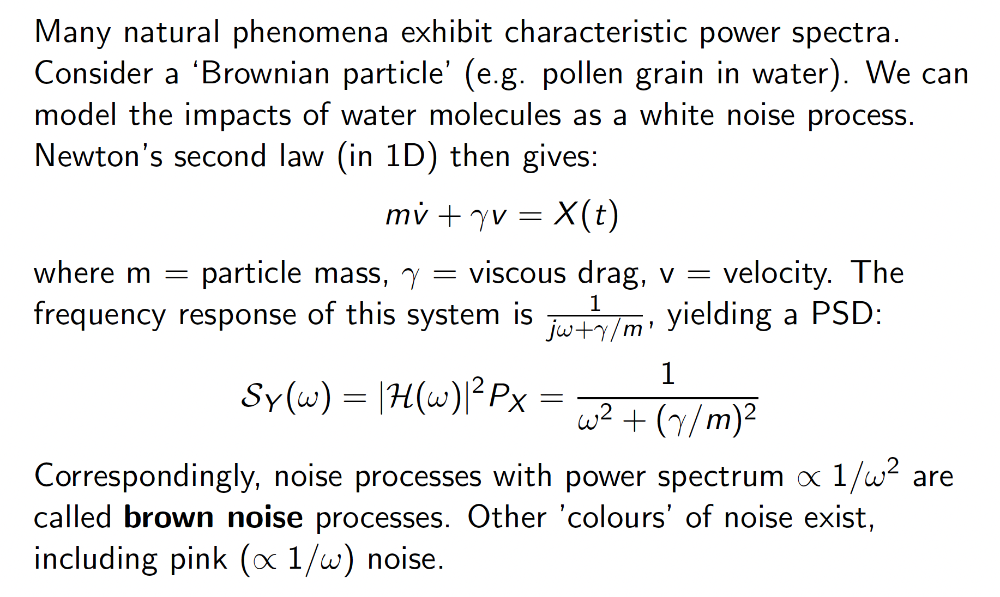

Notes on Signal and System
Continuous System
A system is simply a transform from one time-independent function ( input ) to another time-dependent function ( output ). There are multiple ways to represent a system.
- Ordinary Differential Equation (ODE)
- Transfer function
- Impulse Response
- Frequency Response
A system is said to be linear time-invariant or LTI if a time shift in input produces the same shift in output and linear conbination of input functions produces linear combination of output.
Nyquist Stability Theorem
The Nyquist diagram is a plot of the open-loop transfer function with $\omega$ spanning from $-\infty$ to $\infty$ in the complex plane. The system is stable in negative feedback setup if and only if the number of anti-clockwise encirclement of -1 is equal to the number of the right-hand plane poles of the open loop system
Z-Transform
Z Transform is the discrete version of Laplace transform. We can informally derive Z transform by making the function discrete (using delta functions) in the Laplace transform. Recall that
$$ F(s) = \int_0^\infty f(t)e^{-st}dt $$
Let $f(t) = \sum_x x_n\delta(t-nT)$ and substitute in, by the sifting property and a change of variable $Z = e^{st}$ we have
$$ F(z) = \sum_n x_nz^{-n} $$
which is the definition of the Z transform.
Properties of Z transform
Because of the close link between Z and Laplace, many of the properties are shared, such as the convolution property.
Another important property is that multiple $Z^{-1}$ delays the signal. Therefore $Z^{-1}$ is also called the delay operator. On the other hand, multiplying $Z$ advance the signal.
When advancing the signal, need to take care of the values intruding the negative subscripts, those need to be subtracted because signal should be zero before time 0
Inversion of Z Transform
Like the Laplace transform, we do not do Z inverse transform by hand often. Instead, we decompose the rational fraction into partial fractions and use lookup tables to recover the original function.
Important formulas include:
$$ p^k \leftarrow \frac{1}{1-pz^{-1}}$$
$$ kp^k \leftarrow \frac{pk^{-1}}{(1-pz^{-1})^2}$$
$$ k \leftarrow \frac{z^{-1}}{(1-z^{-1})^2} $$
Unit Pulse Response of Discrete System
We define the unit pulse in discrete time system
$$\delta_k = 1 \text{ for } k=0, \text{ and } \delta_k=0 \text{ otherwise}$$
The Z transform of the unit pulse is simply $1$. Now we can represent any input with a delayed and scaled unit pulse train $(u_0,u_1, u_2,…) = u_0\delta_k + u_1\delta_{k-1} + u_2\delta_{k-2}+…$. For a LTI system, the response is therefore a superposition of its impulse response
$$y_k = \sum_{i=0}^{k}u_ig_{k-i}$$
which is the convolution. Therefore we have $Y(z) = G(z)U(z)$ where $G(z)$ is the Z transform of the impulse response.
Z-Transfer Function
For a discrete system, we can represent it by the z-transform of its impulse reponse, denoted as $G(z) = \frac{Y(z)}{U(z)}$
Finite Impulse Response (FIR) and Infinite Impulse Response (IIR)
If the impulse response is a finite sequence, that is, $g_k = 0 \text{ for } k > m$, then it is said to be FIR. Otherwise it is a IIR.
System with FIR is also called a FIR filter, IIR system is also called IIR filter.
Stability
Formal Definition of Stability
We define stability as “Bounded input gives bounded output”(BIBO), that is, if $\exists M \text{ such that } |{u_k}| < M \text{ for all } k$, then $\exists N \text{ such that } |{g_k}| < N \text{ for all } k$
If a system satisfies BIBO, then we say the system is stable.
Condition for Stability
There are three equivalent necessary and sufficient conditions for stability, each can imply the others.
- $G(z)$ is stable
- All the poles $d_i$ of $G(z)$ lies within the unit circle, that is, $|d_i| < 0$ for all $i$
- $\sum_0^\infty g_k$ is finite
Note that for continuous system, poles need to lie in the left half plane in order to be stable. For discrete system, poles need to lie within the unit circle. Consider a step input, for systems whose pulse response is not constant (i.e., have pole on unit circle), the response is going to be unbounded.
Final Value Thoerem
The final value thoerem for discrete-time system is given as the following:
$$\lim_{k\rightarrow\infty}y(k) = \lim_{z\rightarrow 1}(z-1)Y(z)$$
This is in analogy to FVT in continuous-time system, where
$$\lim_{t\rightarrow\infty}y(t) = \lim_{s\rightarrow 0}sY(z)$$
Noting that we have “derieve” the Z-transform by substituting $z = e^{-st}$, the analogy should be obvious. To formally prove it, consider the partial fraction of the system given by $(z-1)Y(z)$, let’s assume all the poles but one (unrepeated) at 1 lie strictly within the unit circle. Multiplying by $(z-1)$ and computing the limit will drive those terms with $p\neq1$ to zero, while keeping the $p=1$ term. Which is constant in discrete time domain.
Frequency Response
key takeaway
$$\theta = \omega T < \pi$$
If the filter is defined as $G(z)$, then its frequency response to a sinusoid $e^{j\omega Tk}$ is given by $G(e^{j\theta})$, where $\theta = \omega T < \pi$
This can be shown as follows:
$$U(z) = \frac{1}{1-e^{j\theta}z^{-1}}$$
$$Y(z) = G(z)U(z) = \frac{G(\beta_0)}{1-e^{j\theta}z^{-1}} + \text{Terms of the form} \frac{\beta_i}{1-p_i z^{-1}}…$$
Because the poles are assumed to be steady, they eventually die away in steay state. By hide and compute (partial fraction), we know that $\beta_0 =
G(e^{j\theta})$ Hence shown.
This can be shown by observing $(1-e^{j\theta}z^{-1})Y(z)|_{z=e^{j\theta}} = \beta_0 + 0$
Furthermore, the phase is given by $\angle G(e^{j\theta})$.
Bode Plot
Unlike in continuous time, the system is fundamentally limited by $\pi$, beyond which the system response is periodic. There is no easy way to plot the magnitude and phase. But they can be inferred from the locations of poles and zeros

Filter Design Principal
Ideal Filters
Ideal filters have a clear-cut passband region like the following

Unfortunately ideal filters cannot be implemented because they are non-casual. Meaning that the system will need to respond before any input happens. The evenness of the $sinc$ function determines this for the ideal function above.

Realistic Filters
Realistic filters will not have a clear-cut edge. Instead, the region is usually divided into passband, transition and stopband.

FIR Filters
We can design a finite impulse response filter by the following procedure:
- Obtain the idea filter impulse response
- Time shift the reponse
- Truncate the response

It is intuitive to see that the more samples we preserve (i.e., the less we truncate), the better the output response.
FIR filters are really simple to implement and design.

However, to improve the system one need to scale up the number of samples, which has been shown to be less efficient than IIR filters.
IIR Filters
The Infinite Impulse Response filter takes advantage of using feedback to achieve better performance using less computational power. The output goes back to the filter.
Hence the transfer function $G(z) = \frac{N(z)}{D(z)}$ as a denominator hence capable of producing infinite response (by long division).
However, the filter can become unstable if the poles are ill-located. Below is a comparison between IIR and FIR filters.

Design of FIR filters
There are two major ways to design a FIR filter. By shift-and-truncate or by optimazation. We will investigate the first technique.
Frequency distortion of truncation/windowing
Let the shifted desired impulse response be $h_k$ and the truncated response $g_k$. Truncation is equivalent to multiplying by a window.
$$g_k = h_kw_k$$
We can use duality of multiplication/convolution. Multiplication in time domain is equivalent to convolution in the frequency domain.
$$G(e^{j\omega}) = \frac{1}{2\pi}\int_{-\pi}^\pi H(e^{j\theta})W(\omega-\theta)d\theta$$
Why is there a normalizing factor $\frac{1}{2\pi}$?

To visualize convolution. We first turn to the $\lambda$ domain, shift one function by $t$, and then compute the sum of products. A detailed visualization can be found here
We can see that the sharpness of the edge (transition) is dependent on the main lobe width. The smaller the width, the sharper the transition. The transition width is equal to the main lobe width. The ripples magnitude are the magnitude of the tails.
The rectangular window has null (where $|W(e^{j\theta})|=0$) at $2\pi p/N, p=1,…,N$. This means that if the signal has frequency that sits right on one of the frequency bins, there will be no frequency leakage to adjacent bins.

Design by window method
We can reduce frequency distortion by choosing different window function. They would have different frequency characteristic ( main-lobe width and side-lobe decay ).


Design principles are:
- Smaller side lobes yield better approximation of the ideal response.
- Narrower transition bandwidth can be achieved by increasing $N$
- Same $\delta$ for passband error and stopband approximation
The design procedure is as follows:
- Select a suitable window function $w_k$
- Specify an ideal frequency response $H$
- Compute the coefficients of the idea filter $h_k$
- Multiply the ideal coefficient by the window function to give the filter coefficients and delay to make causal
- Evaluate the frequency response of the resulting filter and iterate 1-5 if necessary
Note that the fourier transform is done in the digital domain.
Multi-band design
We can use composition of lowpass filters to achieve passband design. A passband filter of $[\omega_1, \omega_2]$ is simply $\text{Lowpass}_{[0, \omega_2]}(e^{j\theta}) - \text{Lowpass}_{[0, \omega_1]}(e^{j\theta})$
Linear phase
Simply put, linear phase is a property of a filter where the phase response of the filter is a linear function of frequency.
$$\angle G(e^{j\theta}) = |G(e^{j\theta})|e^{j\theta N/2}$$
The result is that all the frequency components of the input signal are shifted in time (usually delayed) by the same constant amount (the slope of the linear function). The illustration below demonstrates what would happen when you don’t have linear phase.
Consider a filter with linear phase with input $\sin(\omega t + \theta)$, the output would be $|G(\omega)|\sin(\omega (t-\tau)+\theta)$. $-\tau$ is the slope of the linear function and is also called the group delay

This comes from the fact that multiplying by e^{-s\tau} is equivalent to delaying $\tau$ in the time domain.
Linear phase is achieved if $g_k = g_{N-k}$, that the filter is symmetric. This can be verified by computing $G(e^{j\theta})$
In general, window method gives linear phase so long as the desired impulse response is symmetric.
Design by optimization
We will not dwell on this.
Design of IIR filters
Discretization by response matching
Impulse invariance
$G_c(s)$ is the Laplace transform continous-time filter. The impulse response of the corresonding impulse invariance digitial filter $G(z)$ (with sampling $T$) is equal to the impulse reponse of $G(s)$ sampled at $t=kT$.

Step response invariance
Following the same argument, we can sample the step response of the continuous system. To retrieve the impulse response of our digital filter, we multiply by $\frac{z-1}{z}$, the inverse of step input.

Similarly, you can do Ramp response invariance etc.
Discretization by algebraic transformation
The idea is starting from a Laplace transform $G_c(s)$, we make our digital filter by $H(z)=H_c(s)_{s=\phi(z)}$ where $\phi(.)$ is a sensible choice mapping $z$ to $s$.
Below we list three common transformation and their intuition. Forward difference (also called Euler’s method), Backward difference and Bilinear transformation (or Tustin’s transformation)


Bilinear transform in detail
Bilinear transform is given by $s = \phi(z) = \frac{z-1}{z+1}$. We first show that stability is preserved.
Stability
$z = \phi^{-1}(s) = \frac{1+s}{1-s}$
For $s = \lambda + j\omega$
$$|z|^2 = zz^* = \frac{(1+\lambda)^2+\omega^2}{(1-\lambda)^2+\omega^2}$$
For $\lambda \leq 0$ (stable poles), we have $|z|^2 < 1 \rightarrow \text{inside unit circle}$
Frequency warping
The analog prototype filter has frequency response $G_c(j\omega)$. The corresponding digital filter has $G(z) = G_c(\psi(z))$. The normalized frequency response of the digital filter is given by
$$G(e^{j\theta}) = G_c(\psi(e^{j\theta}))$$
This is done by substituting $s = \psi(z)$ and $z = e^{j\theta}$
$$\psi(e^{j\theta}) = \frac{e^{j\theta}-1}{e^{j\theta}+1} = \frac{j\sin(\theta /2)}{\cos(\theta /2)} = j\tan (\theta/2)$$
Therefore:
$$G(e^{j\theta}) = G_c(j\tan (\theta /2))$$
The inverse relation is given by $\theta = 2 arctan(\omega)$
$$G_c(j\omega) = G(e^{j2 arctan(\omega)})$$

Intuitively, the higher frequency part is squashed to the higher end of normalized frequency.
Designing Tustin filter
Example: design a first order lowpass digital filter with -3dB frequency of 1kHz and a sampling frequency of 8kHz
Consider the first order analogue lowpass filter
$$G_c(s) = \frac{1}{1+\frac{s}{\omega_c}}$$
the cut-off frequency is $\omega_c$. We know need to find $\omega_c$, with information that the digital filter should cutoff at 1kHz
We first compute the normalized frequency, noting the substitution $\theta = \omega T$
$$\theta_c = (1000 \times 2\pi) \times T = \pi/4$$
The equivalent pre-warped analogue filter cutoff frequency:
$$\omega_c = \tan(\theta_c/2) = \tan(\pi/8) = 0.4142$$
Now we apply the bilinear transform $s = \psi(z) = \frac{z-1}{z+1}$
$$G(z) = G_c(\psi(z)) = … = \frac{0.2929(z+1)}{z-0.4142}$$
Whose implementation reads:
$$y_k = 0.4142y_{k-1} + 0.2929(u_k + u_{k-1})$$
In line with the introduction, we find that the IIR implementation is much more concise than the digital one. Requiring much fewer memory and computation
Band Transformation
Analogue prototypes are typically lowpass. Standard transformation can be used to convert lowpass prototype into other types:

Classical analogue prototypes
pass
Nyquist Stability Criterion
Assuming the controller is a constant gain $K$, and that the plant has transfer function $G$. The closed loop system is stable if and only if:
The number of counter clockwise encirclement of the $-1/K$ point by $G(e^{j\theta})$ as $\theta$ increases from $0$ to $2\pi$ equals the number of open-loop unstable poles.
The Nyquist diagram is drawn for the open loop transfer function.
Note that poles on the unit circle is counted as stable poles.
Asymtopotic behaviour
When there are poles on the unit circle, the Nyquist diagram will explode in magnitude when $e^{j\theta}$ approaches the pole in a straight line. However, we can still investigate the asymtopotic behaviour by a trick of Taylor expansion.
Suppose we $G(z)$ has pole $z=1$ with multiplicity $1$. We can write $G(z)$ as:
$$G(z) = \frac{1}{(z-1)}F(z)$$
where $F(z)$ has no poles or zeros at $z=1$
Then for $z \approx 1$, expand $F(z)$ in a Taylor series to give
$$G(z) = \frac{1}{(z-1)}\left( F(1)+F’(1)(z-1)+O(z^2)\right)$$
$$ G(z) \approx \frac{F(1)}{(z-1)} + F’(1) $$
We can work out $\frac{1}{e^{j\theta}-1} = -1/2 - \frac{j}{2\tan (\theta /2)}$. Therefore, the asymptote as $\theta\rightarrow 0$ will be a straight line with a constant real part of $-1/2 F(1) + F’(1)$
Drawing Nyquist diagram
A Nyquist plot is a parametric plot of a frequency response used in automatic control and signal processing. The most common use of Nyquist plots is for assessing the stability of a system with feedback. In Cartesian coordinates, the real part of the transfer function is plotted on the X-axis. The imaginary part is plotted on the Y-axis. The frequency is swept as a parameter, resulting in a plot per frequency.
Nyquist Sketch Example is a nice video showing how to sketch a Nyquist diagram for continuous system ($s$-domain).
For
Continuous/Discrete Interfaces
Digital-to-analogue converter (DAC)
Take the number of sequence $u(kT)$ and produces a continuous time signal $u(t)$
Zero-order hold
$$u(t) = u(kT)$$

First-order hold

Transfer function analysis of DAC and ADC interfaces
In most real world system, we typically have a computer (digital) as the controller, and a physical device (analogue) as the plant, the device’s motion or other quantity of interests is measured in digital form (digital), and fed back to the computer. The setup is illustrated below:

The big question is: is there a transfer function $G(z)$ from $u$ to $y$?. And the answer is yes if the plant is linear and time-invariant. To find it, we just need to compute the ratio of input and output. An example is given below:

Sampling frequency analysis
Sampling an analogue signal is like multiplying a train of deltas in the time domain, which corresponds to convolving a train of deltas in the frequency domain. Thus we expect to see periodic frequency spectrum as convolving delta with frequency $\Omega$ is just like shifting and replicating the graph by $\Omega$
In light of this, in order to fully recover the original signal, our sampling frequency must be at least equal to twice the maximum frequency in the signal to avoid overlapping frequency range. $2\omega_{max}$ is the Nyquist Frequency
To recover the spectrum, we only need to apply a low-pass filter to the signal. Because ideal low-pass filter cannot be built, we often require our sampling frequency to be greater than the Nyquist frequency, to allow for a transition band.
Discrete Fourier Transform
Discrete time Fourier transform (DTFT)
$$\bar{x}\omega = DTFT(x) = \sum{k=0}^\infty x_ke^{-j\omega Tk}$$
The DTFT has two infeasibilities embedded in its definition:
- $\omega$ is continuous, hence infinite.
- The sum is infinite and hence infeasible to compute
To deal with that we introduce the discrete Fourier transform:
Discrete Fourier transform (DFT)
$$\bar{x}p = \sum{k=0}^{N-1}x_k e^{-j\frac{2\pi}{N}pk}$$
We now have:
- Finite number of frequencies: $\omega = \frac{2\pi\times 1}{N},\frac{2\pi\times 2}{N}, …, \frac{2\pi\times (N-1)}{N}$. This corresponds to $0 \leq p \leq N-1$
- Finite computation: finite data points $0 \leq k \leq N-1$
Because the signal is discrete, its fourier transform will be periodic. $\bar{x}p = \bar x{p+N}$
By observing the definitions for DFT and DTFT, we can see that $\omega T = \frac{2\pi p}{N}$. This is the normalized angular frequency which converts indices $k$ to radian. It itself has unit of radian.
Z-transform and DFT
If we compare the definition of Z-transform and DFT, we can se that the $p^{th}$ coefficient of the DFT is nothing but the Z-transform with $z = e^{-j\frac{2\pi}{N}p}$
DFT as vector base
$$\bar{x}p = \sum{k=0}^{N-1}x_k e^{-j\frac{2\pi p}{N}k}$$
The formula of DFT hints that we can treat the coefficient as projection to a vector base. If we let $x = [x_0, x_1, …, x_{N-1}]^T$ and $b(p,N) = [\exp(-j\frac{2\pi}{N})\cdot 0, \exp(-j\frac{2\pi}{N})\cdot 1, … , \exp(-j\frac{2\pi}{N})\cdot (N-1)]^T$
Then
$$\bar x_p = b(p,N)’x$$
In plain English, $\bar x_p$ is the projection of $x$ on the base $b(p,N)$. It is essentially a linear operation.
We can further pack the expression to obtain the coefficent vector with matrix-vector multiplication as follows:

inverse DFT (iDFT)
In essence, iDFT share the same algorithm as DFT.

Circular convolution
The inverse DFT of the product of the DFTs
$$\bar y_p = \bar g_p \bar x_p, {\bar y_p} \rightarrow {y_m}$$
is the circular convolution of $x$ and $g$
$$y_m = \sum_{k=0}^{N-1}g_kx_{mod(m-k, N)}$$
Filter response via DFT
We note that circular convolution is equivalent to standard convolution if $M \leq m < N$
$$\sum_{k=0}^\infty g_k x_{m-k} = \sum_{k=0}^{M}g_k x_{m-k} = \sum_{k=0}^{N-1} g_k x_{mod(m-k, N)}$$
where $M+1$ is the number of coefficients of the FIR filter ($M$ is the FIR horizon), $N$ is the total number of samples and $m$ is the index of the DFT coefficient.
Note that $M$ is called the FIR horizon, which is the number of coefficients excluding $g_0$
The idea is that FFT-iFFT computes the circular convolution between input $x_k$ and system response $h_k$, but what we actually want is linear convolution between the two. To do that, we tweak $x_k$ to be $\tilde x_k$ so that the circular convolution between $\tilde x_k$ and $h_k$ is equivilent to that linear convolution between $x_k$ and $h_k$.

The batch scheme will give us $N-M$ new points upon each DFT computation. This can be done efficiently using the FFT algorithm.
Fast Fourier Transform (FFT)
The fast Fourier transform is essentially an algorithm that computes the DFT in an effcient way. It does this by divide-and-conquer. The time complexity is $N\log N$ as compared with $N^2$, a significant improvement.
Recall that
$$\bar{x}p = \sum{k=0}^{N-1}x_k e^{-j\frac{2\pi}{N}pk}$$
We can split the summation into two parts:
$$\bar{x}p = \sum{k=0}^{N/2-1}x_{2k} e^{-j\frac{2\pi}{N}p(2k)} + \sum_{k=0}^{N/2-1}x_{2k+1} e^{-j\frac{2\pi}{N}p(2k+1)}$$
$$\bar{x}p = \sum{k=0}^{N/2-1}x_{2k} e^{-j\frac{2\pi}{N/2}pk}+ e^{-j\frac{2\pi}{N}p}\sum_{k=0}^{N/2-1}x_{2k+1} e^{-j\frac{2\pi}{N/2}pk}$$
$$\bar x_p = A_p + W^p B_p$$
In vector notation
$$b(p,N)’x = A_p + W^pB_p = b(p,N/2)’x_A + W^p b(p,N/2)’x_B$$
where $x_A = [x_0,x_2,…,x_{N-2}]’$, and $x_B = [x_1, x_3, …, x_{N-1}]’$
We also note that $\bar x_{p+N/2} = A_p - W^p B_p$. This is called exploiting redundancy
These two observations allow us to go from $N$ DFT to $2\times N/2$ DFT and use past computation.
The below diagram illustrates one recursive stage. Obviously we can further simplify our computation of $N/2$ DFT, until we reach our data point ($1$ DFT).


We notice that it requires some shuffle of input data to compute the final sequence of DFT coefficients in order. The order of input data can be obtained by reversing the binary representation of subscript, as illustrated below:

The inverse fft is simply
$$x = \frac{1}{N}FFT(\bar{x}^*)^*$$
which follows from our previous discussion of the inverse FFT’s nature.
Continuous Time Random Signals
A random signal is a time-dependent random variable, $X(t)$. We can formalize this notion by considering the act of drawing randomly from a set of possible signal waveforms, which we call an ensemble. The ensemble of random signals together with the associated probability distributions is known as Random Process.
Formally, we can write $X(t,\alpha)$ to represent an instace of a random process, where $\alpha$ represents a draw from some set $A$. The random process is then denoted ${X(t,\alpha)}$
Note that $\alpha$ deterministically decide the random variable $X$. It can be regarded as an index
Stationary: statistic of the signal doesn’t change over time. A classical example of a non-stationary signal would be a recording of sound.
Correlations and covariance
Autocorrelation is defined as:
$$r_{XX}(t_1, t_2) = E[X(t_1)X(t_2)] = \int\int x_1x_2f(x_1,x_2)dx_1dx_2$$
Autocovariance is defined as:
$$c_{XX}(t_1, t_2) = E[(X(t_1)-\bar{X}{t_1})(X(t_2)-\bar{X}{t_2})] = \int\int (x_1-\bar X_{t_1})(x_2 - \bar X_{t_2})f(x_1,x_2)dx_1dx_2$$
expanding the expression:
$$c_{XX}(t_1, t_2) = r_{XX}(t_1, t_2) - \bar{X}_{t_1}\bar{X}_{t_2}$$
This looks like $Var(X) = E(X^2) - E(X)^2$
Cross correlation of two different processes, $X$ and $Y$:
$$r_{XY}(t_1,t_2) = E[X(t_1)Y(t_2)] = \int\int x_1 y_2 f_{xy}(x_1, y_2)dx_1dy_2$$
Cross covariance follows similarly:
$$c_{XY}(t_1,t_2) = r_{XY}(t_1,t_2) - \bar{X}_{t_1}\bar{Y}_{t_2}$$
Stationarity
Strict Sense Stationarity (SSS): a process is SSS iff for all finite $N$ and all sets of time points ${t_1,…,t_N}$, the cdf $F$ of the vector $(X_{t_1},…,X_{t_N})$ is invariant for all time shifts, $T$
Wide Sense Stationarity (WSS): a process is WSS iff 1. The mean value is independent of time $E[X(t)]=\mu, \text{ for all } t$ and 2.The autocorrelation depends only on the lag $\tau=t_2-t_1$: $$E[X(t_1)X(t_2)] = E[X(t_1)X(t_1+\tau)] = r_{XX}(\tau)$$
The autocorrelation function (ACF) of a WSS process is symmetric. That is $R_X(\tau) = R_X(-\tau)$. This leads to a real power spectrum density (PSD). See prove at Q4 here
Ergodicity
If we can exchange ensemble averages for time averages, we say a process is Ergodic. This means the ensemble of a process is simply composed of all possible time shifts of a singal random signal.
We define the time average as:
$<X(t)>T = \lim{T\rightarrow\infty} \frac{1}{2T}\int_{-T}^{T} X(t)dt$
$X$ can be mean ergodic and correlation ergodic.
Ergodicity greatly simplifies the measurement of WSS processes. In reality, no proces is truly stationary (therefore cannot be Ergodic) but many noise processes are approximatedly stationary for finite periods.
$$r_{XX}(\tau) = \frac{1}{T_2-T_1}\int_{T_1}^{T_2}X(t)X(t+\tau)dt$$
The interval should be large enough to capture variation in the autocorrelation, but not so large that the process ceases to be stationary.
Power Spectrum Density
The power spectrum density (PSD) $S_X(\omega)$ is defined as the Fourier Transform of the autocorrelation function (ACF). That is, $S_X(\omega) = \int_{-\infty}^\infty R_X(\tau)e^{-j\omega\tau}d\tau$.
We can tell the power of the signal from the power spectrum density. We know that $P_X=r_{xx}(0) = \frac{1}{2\pi}\int_{-\infty}^\infty S_X(\omega)e^{j\omega\tau}d\omega|{\tau=0} = \frac{1}{2\pi}\int{-\infty}^\infty S_X(\omega)d\omega$. By using the inverse Fourier Transform formula. If a signal is passed through an ideal filter with cutoff frequency $\omega_c$, then the limits will be from $-\omega _c$ to $\omega_c$.
This can be thought of as a direct consequence of Parserval’s Theorem as well, noting the the PSD is the frequency spectrum squared. So there is no power of two in the PSD equation
White Noise and Coloered Noise
A white noise is a zero-mean WSS process, with correlation function $R(\tau) = P_X\delta(\tau)$. It’s PSD is constant across all frequencies (as is approximately true for white light). Therefore, we can measure the system’s linear response by observing its response to white noise where $S_Y = S_X|H(\omega)|^2 = P_X(|H(\omega)|^2)$
We also have colored noise such as brown noise and pink noise. Their frequencies response decays with $1/\omega^\alpha$

Jinghong Chen @2021-2022